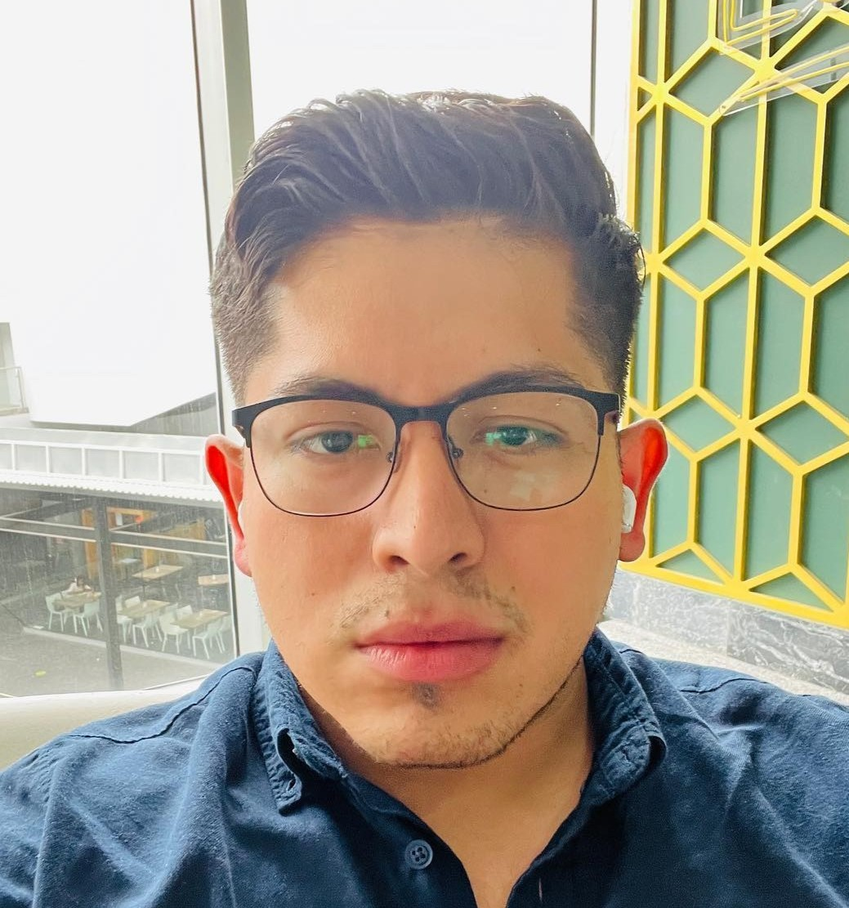

8th Semester Engineering student, Passion for finding better and creative problem solution methods for challenging tasks, and interested on learning new and innovating technologies and tools.
With prior laboral experience with +5 years in customer service and developing aptitudes and strategies for solving problems. Mainly focused on efficient teamwork and working at the same time with different task and KPI's with measurable goals in a finite period of time. Also, assuming operational and administrative leadership responsibilities in an environtment of constant change.
In my free time i love play videogames, go dinner with friends, go to dance on the weekend. I like go to the movies, watch series at home, i like cooking new food and do excercise, to be more specific go to the gym.
